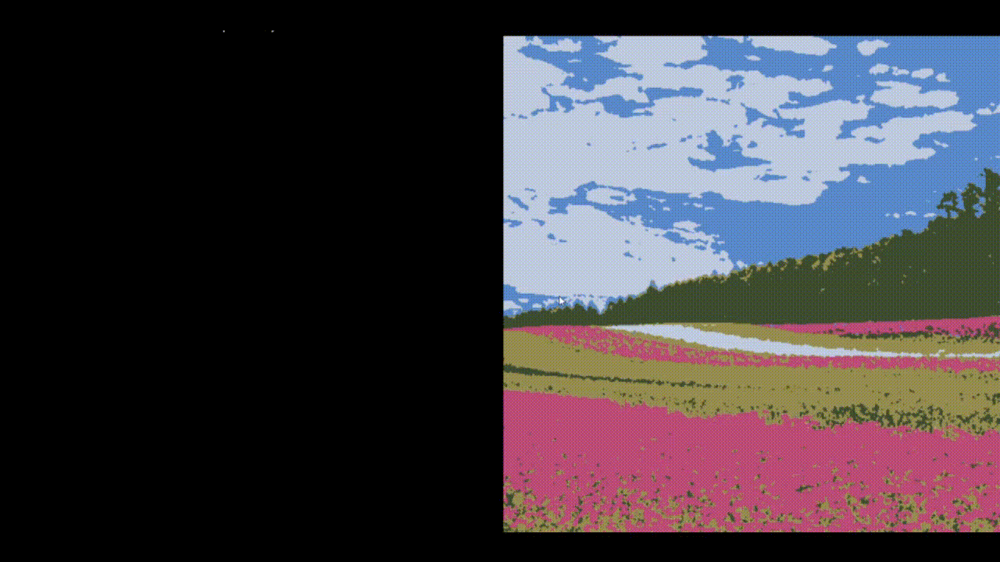
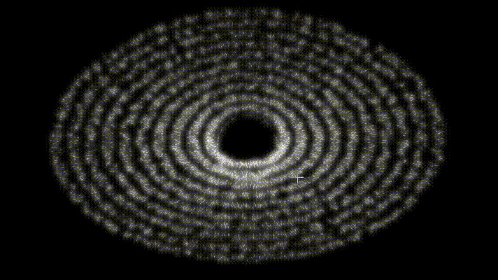
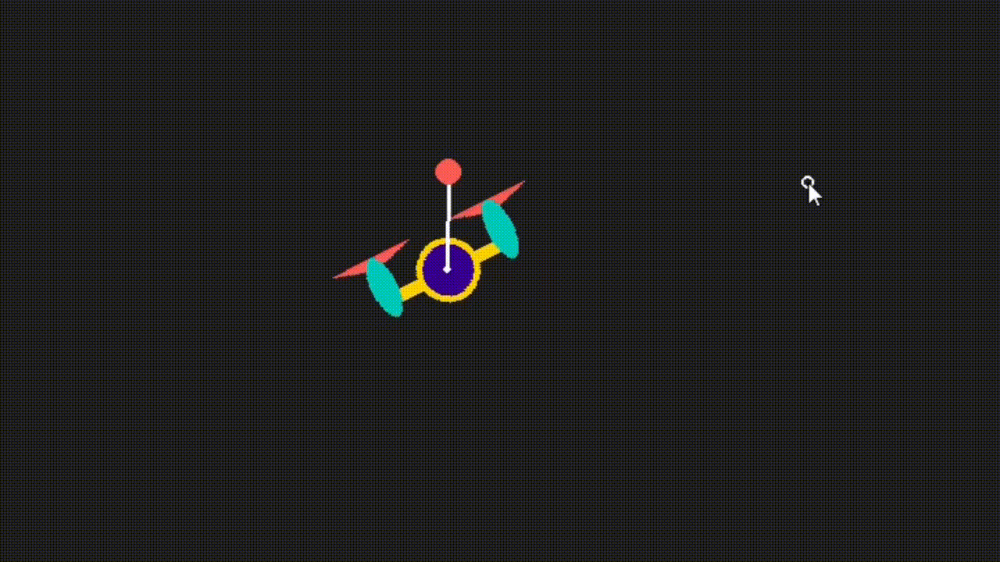
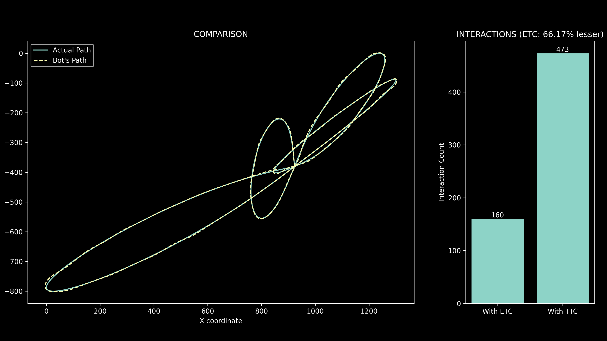

Explorations for Fun
A collection of work ranging from rigorous academic research in safety-critical control to self-directed experiments in evolutionary robotics and generative art.

{kind=link}
ImpastODE: Generative Art
- Procedurally generated Impasto-style paintings using vector fields derived from Ordinary Differential Equations (ODEs) inspired from Van Gogh's style!
- Simulated the physics of thick paint texture and brush stroke dynamics to create organic, non-deterministic visuals.
- Implemented custom color mixing algorithms to mimic real-world pigment blending and lighting effects.

{kind=link}
{kind=link}
Black Hole Raytracer: Raytracer
- Simulated photon trajectories around a Schwarzschild black hole by solving the Eikonal equation with a custom "Effective Refractive Index".
- Implemented a fast Ray-Tracing engine using spline-based path caching to render 3D gravitational lensing effects in real-time.
- Modeled the optical distortion of a rotating accretion disk, demonstrating how extreme gravity warps light like a glass lens.

{kind=link}
Drone-Pole stabilization using LQR
- Simulated a Bicopter-Pole system (inverted pendulum on a 2D drone) from scratch using rigid-body dynamics in Python.
- Designed a Linear Quadratic Regulator (LQR) to stabilize the inherently unstable system linearized about the desired equilibrium point.
- Implemented a Genetic Algorithm to automatically "evolve" the optimal Q and R control matrices, discovering robust balancing strategies without manual tuning.

Stewart Platform: Robust Stabilization
- Developed a full physics simulation for a 2-DOF Ball-and-Plate system using custom Euler integration state-space models.
- Conducted a comparative study between Linear Quadratic Regulator (LQR) for optimal energy use and Sliding Mode Control (SMC) for robust disturbance rejection.
- Implemented a real-time 3-pane dashboard to visualize circular trajectory tracking, control effort, and position error dynamics.

{kind=link}
{kind=link}
{kind=link}
Event Horizon: Event-Based Control
- Implemented Event-Triggered Control (ETC) to drastically reduce computational load by updating control signals only when error thresholds are breached.
- Utilized Particle Swarm Optimization (PSO) to simultaneously tune PID gains and discover the optimal event-triggering threshold.
- Created a Pygame simulation to visualize the trade-off between control frequency and path-following accuracy.